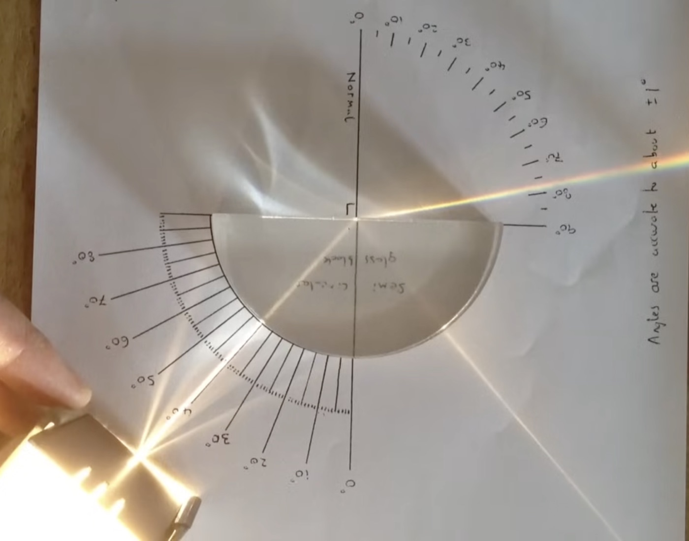

A semi-circular lens, an adjustable angle, and ten minutes to work out why the ray stops crossing the boundary before anyone says "critical angle."
This is Part II and day two of the sequence. I swap the standard rectangular block from Refraction, Part I for a semi-circular lens on the light box.
The ray enters through the curved face and goes straight to the centre, so the angle at the flat face is the only one that matters. I keep that angle adjustable and give students about ten minutes to draw the path and work out why, past some angle, the ray stops crossing the boundary and reflects back instead. I do not say "critical angle" until they have had a go. Once their guesses are down, we formalise the relationship. Then I deliberately switch to a traditional "watch me solve this" approach and work through two or three representative IB questions on the board, especially questions that ask whether the light will leave the medium.
Guesses cluster around "the light just cannot get out anymore," which is close enough to build on. The board work matters because IB questions use very specific language, and "determine whether the light will leave the medium" carries a lot of physics: which medium the ray is leaving, the critical angle, and whether total internal reflection can occur at all. This is why TIR stays as a standalone lesson. The activity gives students a physical event; the worked questions connect that event to the calculation and IB vocabulary. Later, I want that wording to call up a memory of the ray they actually saw, not only an abstract mathematical instruction.
I also keep this total internal reflection video on my LMS so students can always go back to it. It is my absolute favourite: no commentary, no explanation, just the phenomenon. For someone using this guide who does not want to run the lab, the video is a great learning tool on its own.
